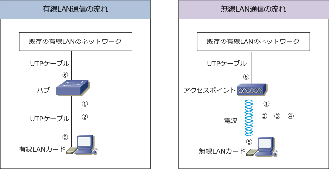
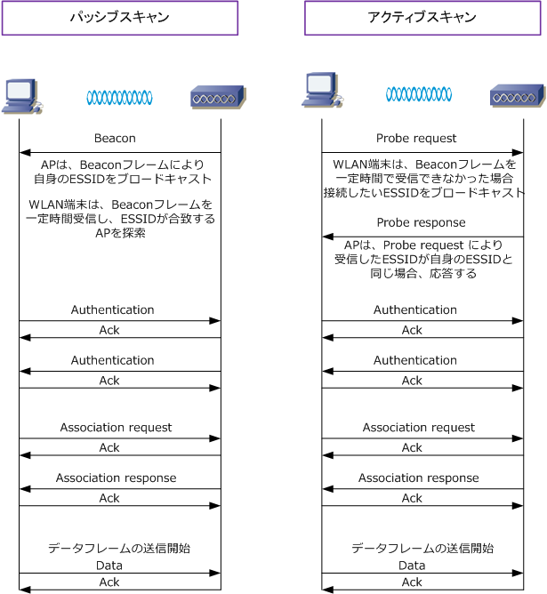

Wireless LAN - Beacon, Probe, Authentication, Association
無線LAN通信の流れ - 概要
無線LAN接続がどのように行われ、どのように通信を開始するのかを有線LANと比較しながら見ていきます。

| 有線LAN | 無線LAN | |
|---|---|---|
| ?@ | 端末をLANケーブルによりハブへ接続する | WLAN端末が利用できる周波数帯域を自動スキャンする |
| ?A | 正しいストレートケーブルの接続によりリンクアップ | WLAN端末とAPがお互いに一致するESSIDであるか確認 |
| ?B | 正しいストレートケーブルの接続によりリンクアップ | WLAN端末とAPがお互いに認証を行う |
| ?C | 正しいストレートケーブルの接続によりリンクアップ | WLAN端末とAPがお互いにアソシエーションを行う |
| ?D | Ethernetフレームを、物理ケーブル上で伝送する | 暗号化したIEEE802.11フレームを、電波に乗せて伝送 |
| ?E | MACアドレスの情報をもとにフレームをそのまま伝送 | APでIEEE802.11フレームをEthernetフレームに変換し伝送 |
| ?F | LANケーブルが抜ければ、スイッチへ再接続する | 電波が届かなくなれば、電波の届く範囲に移動する |
無線LAN通信の流れ - 詳細
IEEE802.11フレームには制御フレーム、管理フレーム、データフレームの大きく3種類がありますが、上図で 紹介した、無線LANの通信のフローにて使用される IEEE802.11の管理フレームの詳細を見ていきましょう。 IEEE802.11の管理フレームにはBeacon, Association Request, Association Response, Probe Request Probe Response, Disassociation, Authentication, Deauthentication など意外に多くの種類があります。
| 無線LAN通信の流れ | 使用されるIEEE802.11フレーム | |
|---|---|---|
| ?@ | WLAN端末が利用できる周波数帯域を自動スキャンする | APから100ミリ秒ごとに送信されるビーコンの情報を もとに、利用できるチャネルの情報、及びESSIDの情報 を得ている。ただし、一定時間ビーコンが得られない場合 プローブ要求とプローブ応答で上記の情報を得ている。 |
| ?A | WLAN端末とAPがお互いに一致するESSIDであるか確認 | APから100ミリ秒ごとに送信されるビーコンの情報を もとに、利用できるチャネルの情報、及びESSIDの情報 を得ている。ただし、一定時間ビーコンが得られない場合 プローブ要求とプローブ応答で上記の情報を得ている。 |
| ※ | 複数のAPが存在する場合、WLAN端末は全チャネルをスキャンして、最も信号の強いアクセスポイントとの接続を試みる。 通信の途中でも現在のAPよりも信号の強いAPを検知した場合、WLAN端末はより信号の強いAPとの接続を試みる。つまり、 複数のAPを近距離で設置した場合、WLAN端末は何度も再接続したりして、快適に通信ができない場合もあるので注意！ |
|
| ?B | WLAN端末とAPがお互いに認証を行う | お互いに認証パケットで認証を行っている。 ※1 なお オープンシステム認証とシェアードキー認証の2種類ある。 |
| ?C | WLAN端末とAPがお互いにアソシエーションを行う | アソシエーション要求と応答によりこれを行っている |
| ?D | 暗号化したIEEE802.11フレームを、電波に乗せて伝送する | WEP or TKIP or CCMP による暗号化を行い伝送される |
| ?E | APでIEEE802.11フレームをEthernetフレームに変換し伝送 | ここでようやく管理フレームではなくデータフレームが伝送 |
※1 この2種類の認証はIEEE802.11における内容であり、当然ながら例えば IEEE802.11i には当てはまる内容ではありません。
WLAN端末とAPとの無線LAN接続手順は以下の2パターンあります。パッシブスキャンではAPからブロード キャストされるビーコンフレームを受信してESSIDの確認をし合いAuthenticationのフェーズに移行します。
アクティブスキャンでは、APから一定時間ビーコンを受信できなかった場合にWLAN端末が接続を行いたい ESSIDの情報をプローブリクエストで送信しAPからその応答が得られれば、Authenticaionのフェーズに移行 します。パッシブスキャン、アクティブスキャンのどちらでも認証フェーズ以降は同じシーケンスとなります。

どのような認証方式、暗号化方式であったとしても無線LAN接続における基本的なフローは上記の通りです。 使用チャネル、変調方式、ESSIDの相互確認がとれた後、「認証 → アソシエーション → データのやりとり」 という基本的なフローをまず理解して、それぞれの詳細な認証方式、暗号化方式のフローを理解しましょう。
※ WPAやWPA2のセキュリティ規格を使用する場合、アソシエーション後に暗号化を行うための鍵の生成プロセスが開始されます。